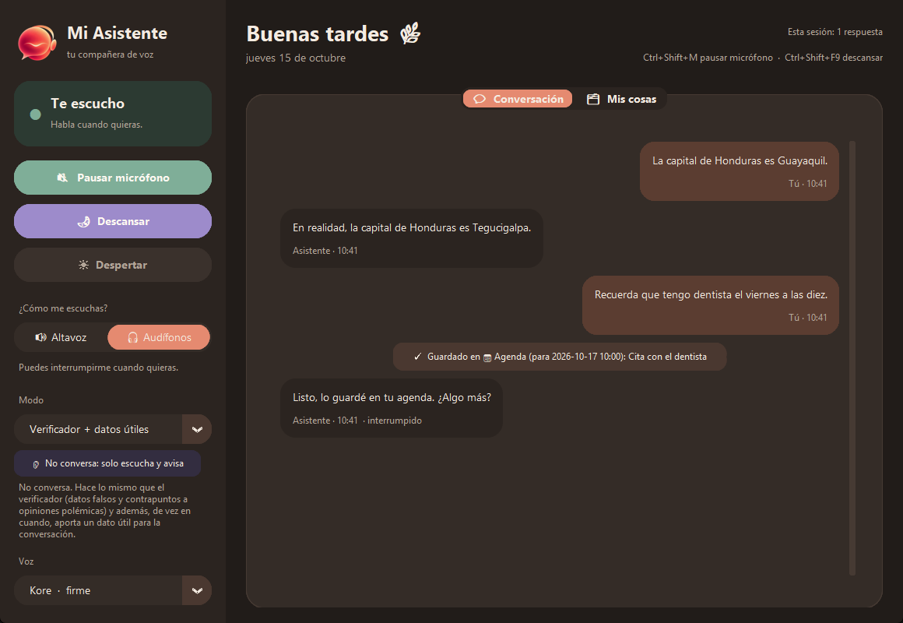

Analista de Datos // SQL · Python · Power BI // Pipelines de datos y automatización
// ELIGE TU RUTA
// 01.1 — WHOAMI
SOBRE MÍ
Soy un Data Analyst chileno y me gusta trabajar con los datos de principio a fin: desde extraerlos de
distintas plataformas y organizarlos en SQL Server, hasta automatizar los procesos y
transformarlos en dashboards de Power BI que sean realmente útiles para quienes los usan.
Actualmente, en OurRescue, desarrollo este tipo de soluciones para distintas áreas de la organización,
como recaudación de fondos, marketing, e-commerce, finanzas y misión.
Estudié Computer Information Technology en Estados Unidos, así que me siento igual de cómodo escribiendo
el Python y el T-SQL que hay detrás de un reporte que diseñando el reporte mismo, y trabajo en
español e inglés.
> estudios
Licenciatura en Computer Information Technology · BYU-Idaho · Rexburg, Idaho, EE. UU.
Certificación Datapath · Derby, Inglaterra
> además
Dos años de servicio voluntario de tiempo completo como misionero de La Iglesia de Jesucristo de los Santos de los Últimos Días
// 01.2 — ANALISTA DE DATOS
OURRESCUE
ANALISTA DE DATOS · ONG · SQL SERVER + POWER BI
OurRescue es una organización sin fines de lucro que combate la trata y la explotación infantil. Sus
equipos trabajan con una docena de plataformas distintas, desde los formularios de donación y el CRM hasta
la tienda online, los anuncios y las redes sociales, y cada una guarda sus propios datos. Construí la capa
que las une: procesos en Python que llevan los datos de cada plataforma a SQL Server de
forma programada, y los reportes de Power BI que cada departamento usa para tomar
decisiones.
fuentes
DonacionesDonaciones · CRM
ComercioTienda · Envíos
MarketingAnuncios · Redes · Web
PythonProcesos ETL
SQL ServerStage → Merge
ReporteríaPower BI
10+plataformas conectadas
30+reportes de Power BI
40+scripts ETL en Python
1hactualización más rápida
> lo que hago
Pipelines de datosETL en Python desde APIs REST (donaciones, CRM, Shopify, ShipStation, GA4, Google Ads, Meta, YouTube, y plataformas de voluntariado y de donaciones pareadas por empleadores) hacia tablas staging en SQL Server, con reintentos, paginación y cargas incrementales.
SQL ServerT-SQL que convierte las tablas staging en tablas de reportería: upserts con MERGE, eliminación de duplicados, limpieza de fechas y textos, y funciones de ventana para analizar la retención de donantes, las donaciones recurrentes y el riesgo de abandono.
AutomatizaciónProcesos programados con SQL Server Agent y el Programador de tareas, desde sincronizaciones de donaciones cada hora hasta cargas diarias, además de un bot en Playwright que descarga un reporte de una plataforma que no tiene API.
Power BIReportes de recaudación y donantes recurrentes, marketing, la tienda online, presupuesto vs. real, RR. HH., y el impacto de los programas K-9 y de apoyo a las policías.
> consulta de ejemplo // esquema ficticio, misma idea
-- LYBUNT: donó el año pasado, pero todavía no este añoWITH yearly AS (
SELECT donor_id,
YEAR(gift_date) AS gift_year,
SUM(amount) AS total
FROM dbo.gifts
GROUP BY donor_id, YEAR(gift_date)
)
SELECT ly.donor_id, ly.total AS last_year_total
FROM yearly ly
LEFT JOIN yearly ty
ON ty.donor_id = ly.donor_id
AND ty.gift_year = ly.gift_year + 1WHERE ly.gift_year = YEAR(GETDATE()) - 1AND ty.donor_id IS NULLORDER BY ly.total DESC;
> stack
SQL ServerT-SQLSQL Server AgentPythonpandaspyodbcSQLAlchemyAPIs RESTPlaywrightBigQueryPower BIDAXPower QueryPower AppsExcel
// 99.3 — MISIÓN SECUNDARIA
BONUS
Felicidades por llegar tan abajo: desbloqueaste a mi compañero de home office. Jefe de
seguridad, encargado de recordarme tomar pausas y de supervisar cada deploy desde la puerta 🐾
// 02 — DASHBOARDS
LICITACIONES MINERAS
Un dashboard de Power BI en vivo con datos públicos reales: todas las
licitaciones relacionadas con la minería en Mercado Público desde enero de 2024, con sus
compradores, oferentes y ganadores. Trae datos nuevos de ChileCompra todos los días y se
actualiza solo, así que lo que ves sigue moviéndose sin que nadie lo toque.
Quién compra: los organismos detrás de las licitaciones mineras, cuántas abren y cuánto adjudican, por región y por tamaño de compra
Qué y cuándo: maquinaria y vehículos, insumos o compras administrativas, mes a mes y contra el mismo período del año anterior
Quién gana: los proveedores ordenados por monto adjudicado, y la tasa de éxito de cada uno: licitaciones ganadas sobre licitaciones en que participó
Qué tan difícil es ganar: cuántos oferentes atrae una licitación y cuántas se deciden con una sola oferta
A qué precio: el monto adjudicado frente al presupuesto estimado, por tamaño de compra
Quién domina el mercado: la parte del dinero que se llevan los 5 principales proveedores
Power BIDAXModelo estrellaPythonCron en GitHub ActionsDatos Abiertos ChileCompra
Fuente: Dirección ChileCompra, Datos Abiertos. Solo incluye licitaciones cerradas que recibieron ofertas,
y las adjudicaciones aparecen entre 8 y 45 días después del cierre, así que los últimos meses todavía no
tienen montos. Proyecto independiente, sin relación con ChileCompra.
Los reportes de mi trabajo no pueden salir de la oficina, así que los próximos ejemplos están hechos de la
misma forma, pero con datos ficticios, para que puedan ser totalmente públicos.
Mapa de cobertura con radiosEN EL LAB
Reportes de operacionesEN EL LAB
// 99.1 — MISIÓN SECUNDARIA
BONUS
Si llegaste hasta aquí, te mereces una foto del Estadio Nacional de Chile, donde juega el equipo de fútbol
más increíble de todos: Universidad de Chile 💙
// 03.1 — EN PRODUCCIÓN
HAGOTEK
INTEGRADOR AV Y SEGURIDAD · CHILE · SOCIO Y ÚNICO DESARROLLADOR
Hagotek es una empresa chilena que diseña e instala sistemas de audio, video, seguridad electrónica
e iluminación inteligente en todo el país. Soy uno de sus socios y construí sus dos piezas de
software por mi cuenta: el sitio web público y el ERP con el que funciona la empresa.
A Sitio web
Un sitio bilingüe español / inglés con una página para cada servicio y una línea directa de
WhatsApp para cotizar. Estático, hecho con Astro, publicado en Netlify y
con sitemap para los buscadores.
Una aplicación web privada que cubre todo el ciclo comercial: una cotización se convierte en orden de venta,
la orden genera guías de despacho y facturas, y cada documento tributario se emite electrónicamente ante el
SII. El equipo la usa todos los días. Sus datos son información real de clientes, así que en
vez de capturas, así es como fluyen los documentos por el sistema:
01Cotización
02Orden de venta
documentos electrónicos
DTE 52Guía de despacho
DTE 33Factura
↳
DTE 61Nota de crédito
ImpuestosSII
3tipos de DTE ante el SII
8módulos de negocio
5roles de usuario
24modelos de datos
> capacidades
Cotizaciones y órdenes de venta con costo y margen por línea, y precios en CLP o USD por producto
Facturas, guías de despacho y notas de crédito electrónicas emitidas ante el SII mediante el motor DTE de Soluciones Market, validando el RUT y los límites de campos del SII antes de emitir
Guías de despacho que descuentan stock, órdenes de compra con recepción de mercadería y alertas de stock bajo
Proyectos con tareas y adjuntos, más un editor tipo draw.io para diagramas de conectividad AV y de red
Gastos por centro de costo, reportes de IVA y de rentabilidad, y un dashboard con rankings de ventas
Cinco roles con permisos validados en el servidor, bloqueo de cuenta tras 5 intentos fallidos y respaldos cifrados
Una copia de producción que bloquea los documentos tributarios reales, para probar cambios sin riesgo
REPO PRIVADO // LOS DATOS DE CLIENTES SE QUEDAN PRIVADOS
C Radar de licitaciones
Las instituciones públicas de Chile compran a través de Mercado Público, la plataforma de
compras del Estado. Hay plataformas de pago que venden alertas de licitaciones con suscripción mensual; esta
está integrada en el ERP y ajustada exactamente a lo que instala Hagotek. Cada mañana, un proceso en
GitHub Actions trae las licitaciones abiertas, puntúa las que todavía no ha revisado y guarda
las relevantes. A diferencia del resto del ERP, este módulo solo trabaja con datos públicos, así que sí lleva
una captura real:
Reglas de palabras clave con pesos para cinco categorías (audio, audiovisual, CCTV / seguridad, control de acceso, automatización); una coincidencia en el título o la descripción pesa más que una perdida en la lista de ítems
Los códigos de producto UNSPSC de cada ítem suman al puntaje
Descarta las licitaciones que solo coinciden por palabras compartidas (guardias de seguridad, audífonos médicos…) y los arriendos para eventos puntuales
Marca las que incluyen instalación en terreno, no solo despacho de cajas
Sigue las licitaciones guardadas después del cierre, para saber si se adjudicaron o quedaron desiertas
Envía cada mañana un resumen de las nuevas por correo con Resend, con HTML hecho para verse bien en Outlook
En el ERP: vistas de abiertas, en seguimiento y descartadas, filtros por categoría e instalación, búsqueda, y un estado para cada licitación, de Nueva a Postulando, Ganada o Perdida
Deliberadamente simple: reglas ajustadas a mano revisando qué entra y qué no, no un modelo
API de Mercado PúblicoCron en GitHub ActionsPuntaje con regexUNSPSCResendPrisma
// 03.2 — IA DE VOZ
MI ASISTENTE
ASISTENTE DE VOZ CON IA EN TIEMPO REAL · PROFESOR DE IDIOMAS · WINDOWS · ANDROID
Un asistente de voz de escritorio con el que hablo a través de mis audífonos. Envía el audio a la
Gemini Live API (o a la OpenAI Realtime API) por WebSockets, responde con
una voz natural y se le puede interrumpir a mitad de frase. Sus modos de escucha se quedan en silencio
durante las reuniones y solo te susurran una corrección cuando alguien dice algo falso, un contrapunto neutral
ante opiniones tajantes o un dato útil, revisando Wikipedia antes de corregir.
También es el compañero perfecto para aprender inglés, español, portugués o japonés:
conversa contigo en el idioma, corrige tus errores al instante y los guarda para que los repases después.
LIVE_FEED // mi-asistente.exeREC

4idiomas para aprender
30voces para elegir
11carpetas de memoria
7modos de personalidad
> capacidades
Conversación de voz a voz en tiempo real, con detección de voz en el servidor, interrupciones y reanudación automática de la sesión
Modos de profesor de idiomas para inglés, español, portugués y japonés, que corrigen tus errores mientras hablas
Modos de verificador de datos con búsquedas en Wikipedia, y en Google Search cuando el plan de la API lo permite
Memoria de largo plazo en SQLite organizada en carpetas (agenda, música, aprendizaje…), que se puede buscar por voz y en la app
Personalidades editables como perfiles en Markdown, 30 voces, modo de reposo y atajos de teclado globales
Interfaz de escritorio cálida, en modo claro y oscuro, hecha con customtkinter
Pruebas con eventos de servidor simulados para interrupciones, llamadas a herramientas y reconexiones, todas sin conexión con Pytest
> stack
PythonasyncioGemini Live APIOpenAI Realtime APIWebSocketsSQLiteNumPysounddevicecustomtkinterPytest
> demo gratis // windows 10-11 // zip de 41 MB // descomprímelo y ejecuta Mi Asistente.exe. Usa audífonos. Si Windows dice que "protegió tu PC", haz clic en Más información → Ejecutar de todas formas.
> android 10+ // apk de 31 MB // ábrelo en tu teléfono, permite instalar apps desde tu navegador y luego dale acceso al micrófono.
// 99.2 — MISIÓN SECUNDARIA
BONUS
Felicidades por llegar tan abajo: desbloqueaste mi equipo de netrunner. Dos pantallas, un
teclado que brilla en cian y un mousepad de Cyberpunk 2077. Cada proyecto de esta página se conectó desde
aquí 🦾